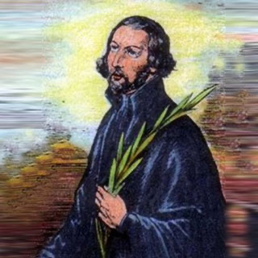

Isusovački blaženici
Svećenik
Bl. Toma Holland
1600. – 1642.
Thomas Holland unatoč slabomu zdravlju potajno je donosio sakramente londonskim katolicima. Uhićen zbog svećeničke službe, pred smrt je molio za zemlju i progonitelje.
Tekst je preveden i prilagođen uz pomoć umjetne inteligencije.

Izvor slike
- Spomendan
- 12. prosinca
- Zaštitništvo
- Nije navedeno u izvoru
- Životni vijek
- 1600. – 1642.
- Djelovanje
- Duhovno vodstvo i razlučivanje · Bolest i osobne kušnje · Progoni i progonstvo · Mučeništvo
- Razdoblje
- 16., 17. stoljeće
- Rođenje — dostupni podaci
- 1600.; dan i mjesec nisu potvrđeni u provjerenom izvoru.
- Mjesto rođenja
- Lancashire, Engleska
- Datum smrti
- 12.12.1642.
- Mjesto smrti/mučeništva
- Tyburn, London, Engleska
- Okolnosti smrti/mučeništva
- Pogubljen vješanjem i sakaćenjem zbog katoličkoga svećeništva i djelovanja za progona.
- Uloga
- Svećenik
- Mučenik
- Da
- Ostale oznake
- Mučenik engleskih protukatoličkih progona
- Pripadnost
- Isusovac
- Drugi oblici imena
- Thomas Holland · Thomas
Životopis
Thomas Holland rođen je 1600. u Lancashireu. Šest je godina pohađao engleski kolegij u Saint-Omeru, zatim od 1621. studirao u Valladolidu. Kao sjemeništarac 1623. izabran je da latinskim govorom pozdravi princa Charlesa u Madridu. Sljedeće je godine pristupio isusovačkome novicijatu u Wattenu. Teologiju je studirao u Liègeu, gdje je zaređen za svećenika.
Bio je duhovnik mladih isusovaca u Saint-Omeru. Poznavanje duhovnoga života pribavilo mu je među subraćom poseban ugled. Godine 1635. poslan je u Englesku, uz nadu da će mu podneblje pomoći narušenu zdravlju. Ipak, sedmogodišnji potajni apostolat u Londonu zahtijevao je noćna putovanja i skrivanje. Služio se imenima Saunderson i Hammond, a znanje francuskoga, španjolskoga i flamanskoga olakšavalo mu je prikrivanje identiteta.
Uhićen je 4. listopada 1642. nakon posjeta bolesniku. Iz New Prisona premješten je u Newgate. Na sudu nije bilo pouzdana dokaza njegova svećeništva, no odbio ga je zanijekati pod zakletvom i osuđen je na smrt. U zatvoru je s katolicima molio hvalospjev Tebe Boga hvalimo i primao njihove molitvene nakane. Kapucini su mu pribavili potrebno da može posljednji put slaviti misu.
Na Tyburnu je 12. prosinca 1642. oprostio sucima i krvniku te molio za kralja, parlament i narod. Pred smrt je od svećenika među okupljenima primio odrješenje. Nakon vješanja tijelo mu je raskomadano i izloženo na London Bridgeu. Imao je oko četrdeset dvije godine. Blaženim ga je proglasio papa Pio XI. 15. prosinca 1929.
Tekst je preveden i prilagođen uz pomoć umjetne inteligencije.
Pročitaj više na izvornoj stranici ↗